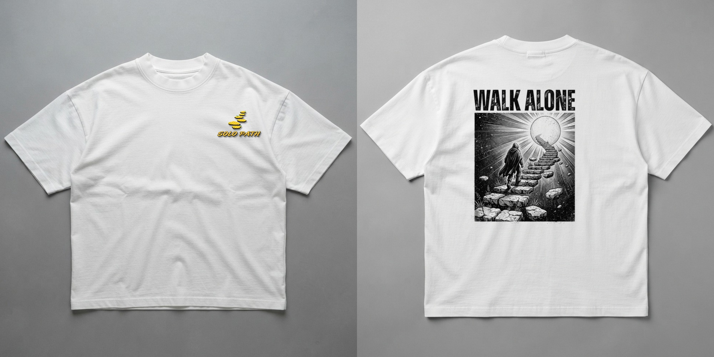
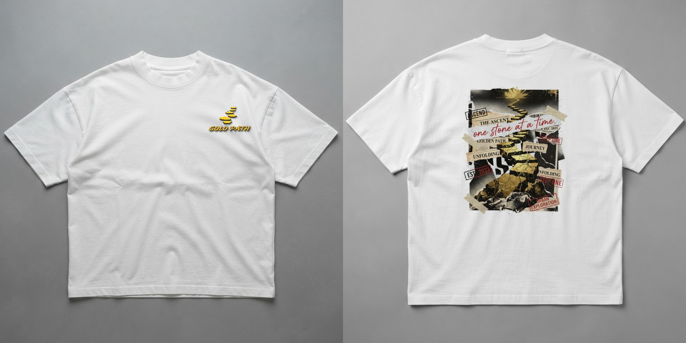
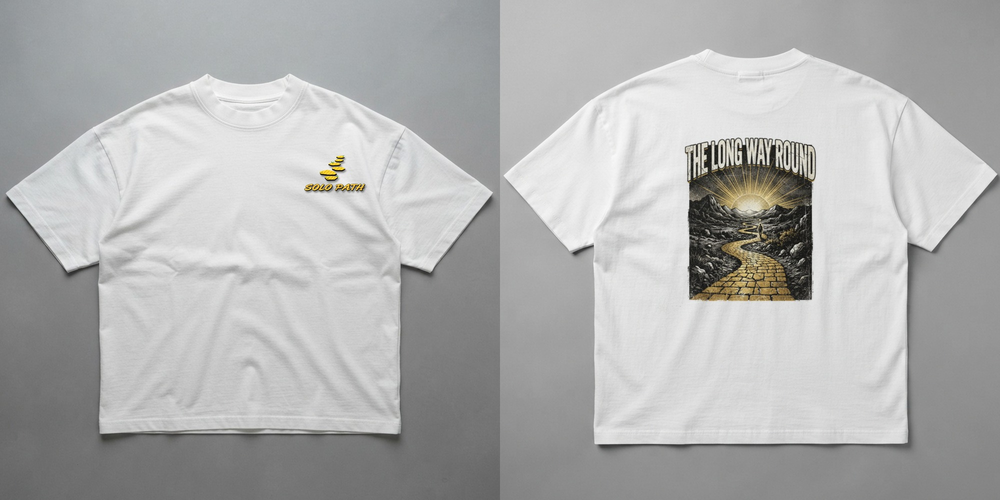
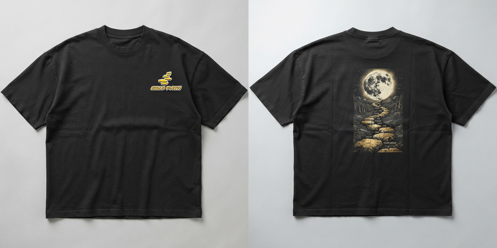

Lookbook
Drop 01, in colour
Every piece, one stone at a time. Tap a look to see the details.
Front and back
Left-chest embroidery up front, the big print across the back.




Wear the path.
Found a favourite? Add it to your bag before it's gone.